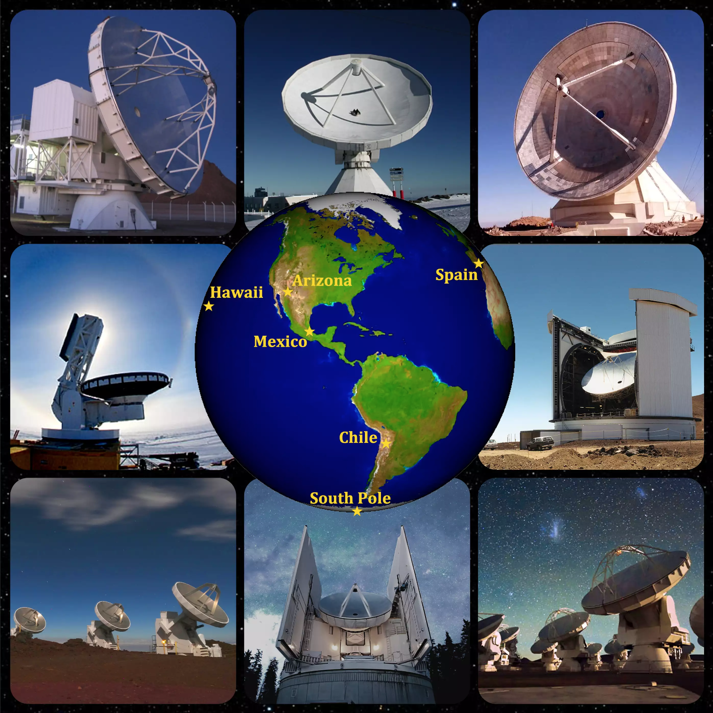
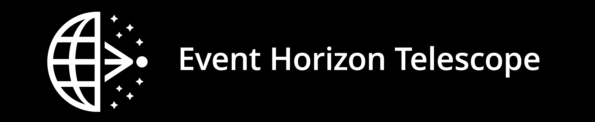
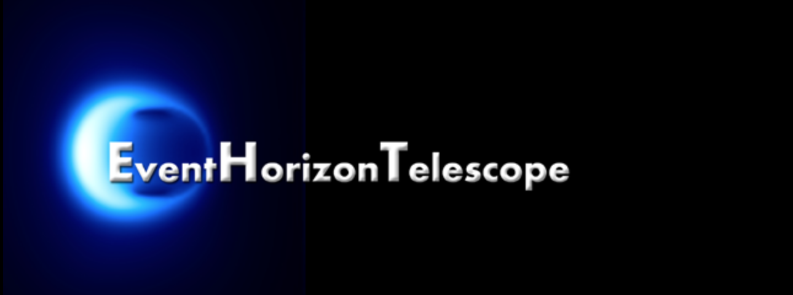
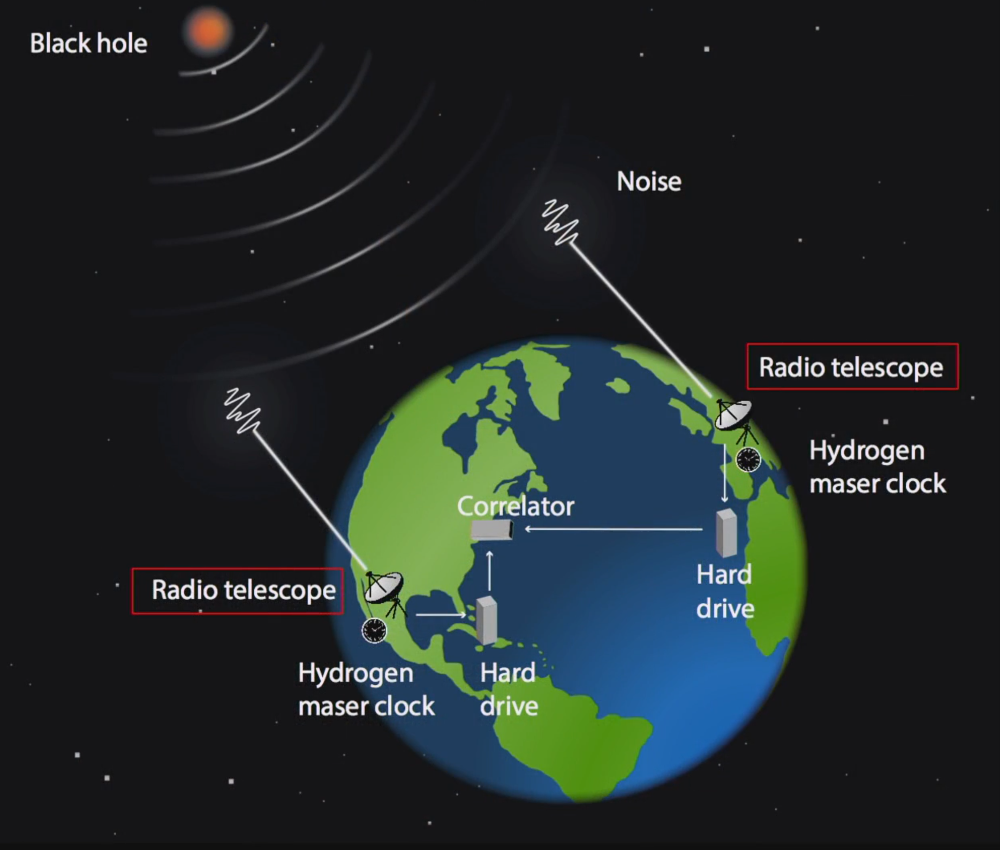
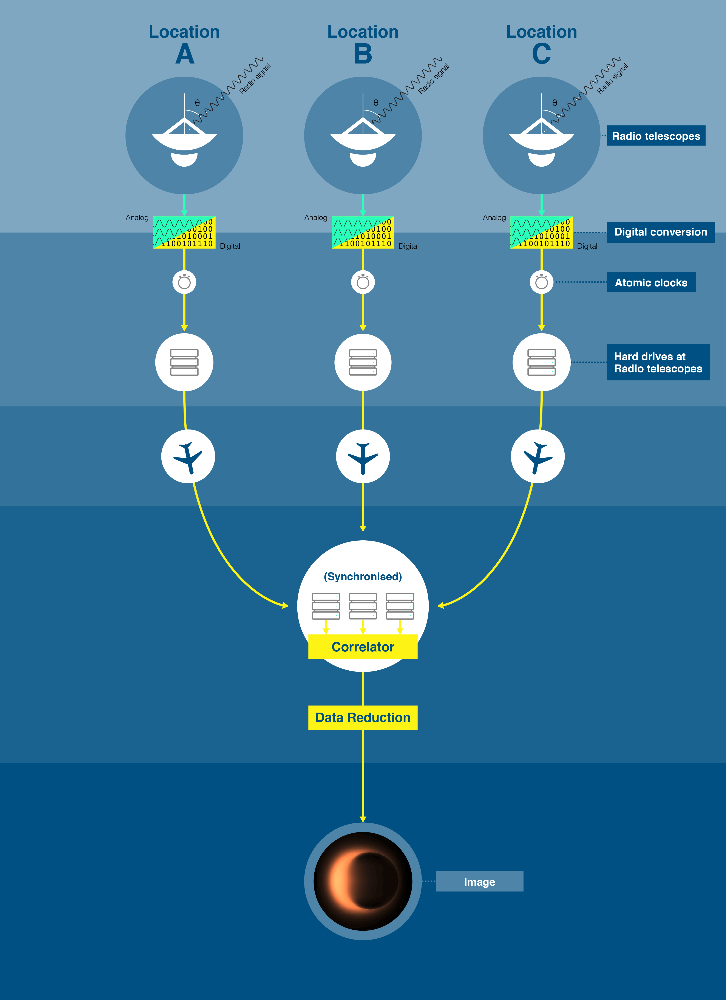
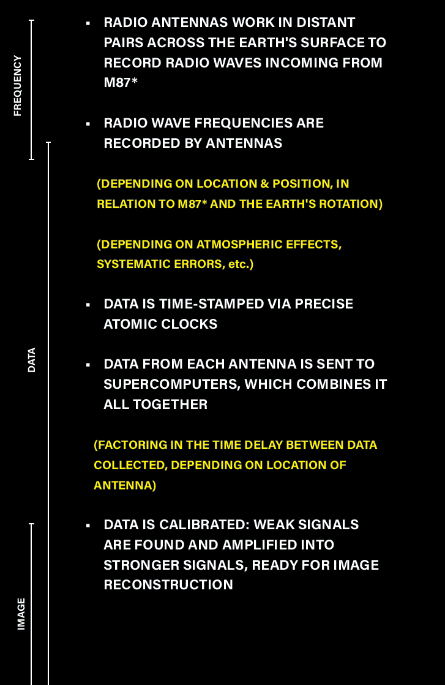

MAKING THE BLACK HOLE IMAGE



Black holes were brought back into mainstream media when the Event Horizon Telescope Collaboration (EHT) unveiled the "first ever image of a black hole" in April 2019. Established in 2009, EHT is a growing international organisation of over 300 scientists from leading academic institutions. These members are connected by a shared goal to capture the highest resolution images ever seen of black holes, an astronomical body which until recently had only existed in theory. By producing an image of a distant black hole at the scale of its event horizon, EHT can help to provide much sought-after answers for fundamental physics on a supermassive scale. As a team, EHT's members operate from their respective locations around the planet, formed through the organisation of a management team, advisory council, team co-ordinators and active members. Their decadeslong research receives support from both public and private funding, which grows along with their increasing developments1.
Their method of imaging black holes consists of two core stages - first, the astronomical observation and then the computational imaging. The former focuses on connecting various ground-based radio telescopes, located in continents across the planet, into a network which can simulate the capabilities of one massive telescope, synthetically forming an Earth-sized radio dish. With this, they can focus on the centre of a galaxy, right down to the boundary of the black hole at its centre and collect radio-waves that have been emitted from this region and travelled millions of light years to eventually reach the telescopes' antennas. The latter stage requires merging all of the digitised data collected from each individual telescope and processing it to produce a truthful, valid image of the radio waves that were captured.
Yet, the telescope network is patchy in its coverage. EHT founding director Sheperd Doeleman compares it to "taking an optical mirror, smashing it and putting all the shards in different places"2. Those separated shards symbolise the isolated locations of EHT's radio telescopes and how this in turn produces very narrow sight-lines from which they can try to create an image. These sparse data points (there being only ten of them) can result in images that are not only perfectly consistent with the theorised image of a black hole, but also with an infinite number of images of different objects and forms. To address this, the team uses computational tools and algorithms to complete the rest of the image, selecting final images that are deemed the most appropriate and truthful renderings of the recorded data. After many blind experiments, independent workshops and group comparisons using synthetic test data, the team can then apply their verified imaging methods to the real data. In addition to the various final results, EHT also produced a specific image as a final representation which was then shared with the public in 2019.
The following is a condensed summary on some of the processes and challenges that were undertaken by EHT to collect the M87* data and produce the resulting images.